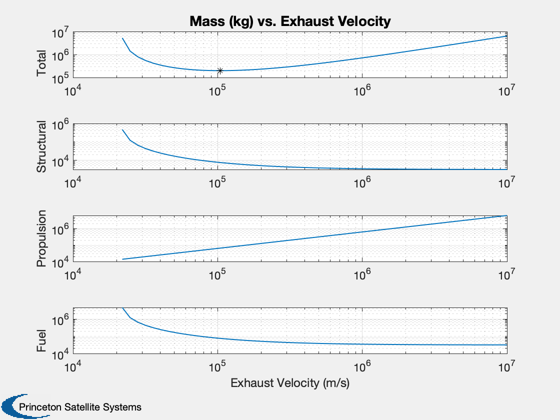

Design an electric powered transfer vehicle.
Uses the payload mass, the required delta-V, the required thrust, the ratio of structure to fuel mass (for tanks, etc.) and the power per unit mass.
------------------------------------------------------------------------ See also OptimalVehicle, ElectricPropulsionDesign, Plot2D, MinimumExhaustVelocity ------------------------------------------------------------------------
%-------------------------------------------------------------------------- % Copyright (c) 1997-2004 Princeton Satellite Systems, Inc. % All rights reserved. % 2021.1 Fix plotting bug of optimal value. %-------------------------------------------------------------------------- x = struct(); x.mP = 50000; % kg x.thrust = 15000; % N x.dV = 50000; % m/s x.pR = 1e9/50000; % W/kg x.sR = 0.1; % kg/kg x.eff = 0.6; % efficiency uEMin = MinimumExhaustVelocity( x.sR, x.dV ); x.uE = 1.5*uEMin; % guess fprintf('------------- Inputs --------------\n') fprintf('Payload %12.2f kg\n' , x.mP) fprintf('Thrust %12.2f N\n' , x.thrust) fprintf('Delta-V %12.2f km/s\n', x.dV*1e-3) fprintf('Efficiency %12g\n' , x.eff) fprintf('Structural Ratio %12.2f kg/kg\n' , x.sR) fprintf('Power Ratio %12.2f W/kg\n' , x.pR) fprintf('-----------------------------------\n\n') % Find the optimal exhaust velocity and design the vehicle %--------------------------------------------------------- fprintf('Optimal electric vehicle design:\n\n') xOpt = OptimalVehicle( x, true ); xT = xOpt; % Test a vector of uE's to confirm this is optimal uE = logspace(log10(1.05*uEMin), ceil(log10(100*x.uE))); mPlot = zeros(4,length(uE)); for k = 1:length(uE) xT.uE = uE(k); xT = ElectricPropulsionDesign( xT ); mPlot(:,k) = [xT.mT;xT.mS;xT.mR;xT.mF]; end [z,j] = find( mPlot(1,:) > 0 ); j = min(j); uE = uE(j:end); mPlot = mPlot(:,j:end); yP = char('Total','Structural','Propulsion','Fuel'); Plot2D( uE, mPlot, 'Exhaust Velocity (m/s)',yP,'Mass (kg) vs. Exhaust Velocity','log'); subplot(4,1,1) hold on plot(xOpt.uE,xOpt.mT,'k*') %--------------------------------------
------------- Inputs -------------- Payload 50000.00 kg Thrust 15000.00 N Delta-V 50.00 km/s Efficiency 0.6 Structural Ratio 0.10 kg/kg Power Ratio 20000.00 W/kg ----------------------------------- Optimal electric vehicle design: Total mass 198228.29 kg Structural mass 7577.07 kg Propulsion system mass 64880.50 kg Payload mass 50000.00 kg Dry mass 122457.57 kg Fuel mass 75770.72 kg Power 1297.61 MW Exhaust velocity 103.81 km/sec Power ratio 20.00 kW/kg Mass flow 0.144496 kg/s Thrust 15000.000 N Total delta V 50.00 km/sec Average acceleration 9.35e-02 m/sec^2 Burn time 6.19 days